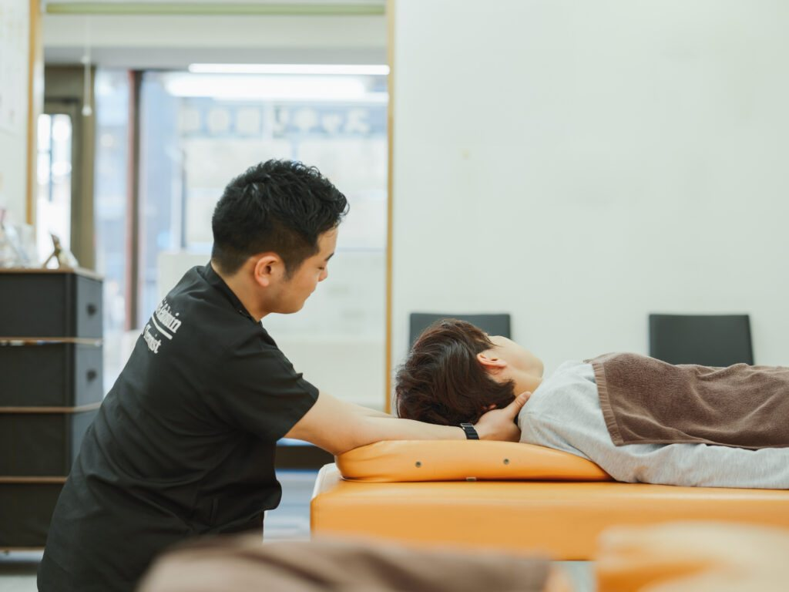
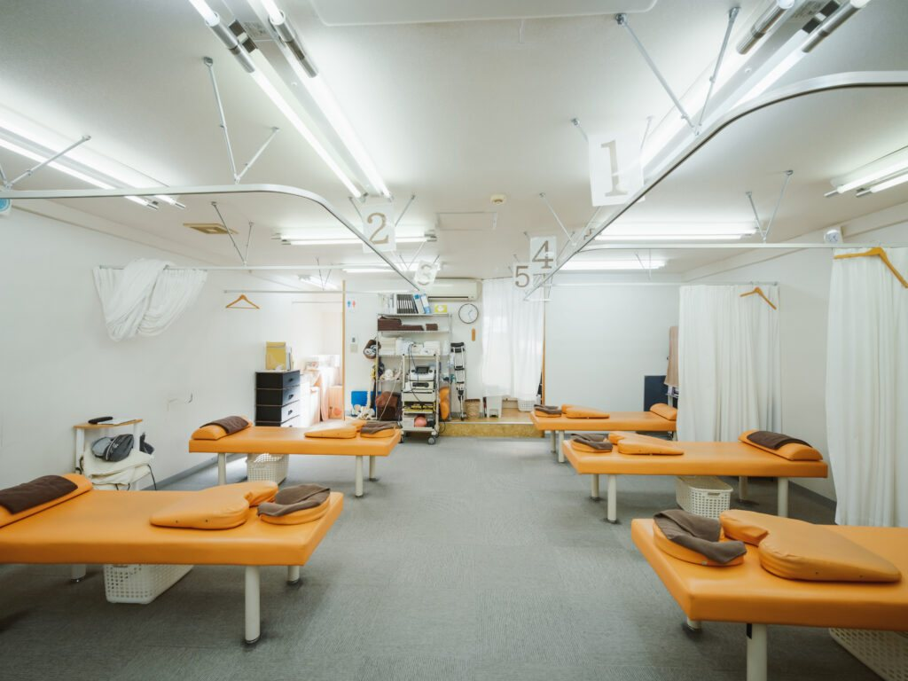
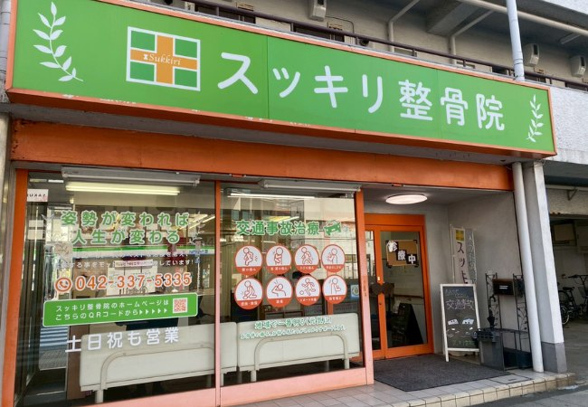

初回は検査に
じっくり時間をかけます
肩の可動域、肩甲骨の動き、首の前後バランス、骨盤の傾きを一つずつ確認。どこが原因で肩に負担が集まっているのかを特定してからご説明します。
聖蹟桜ヶ丘駅から徒歩4分
肩を強く揉むほど、体は防御反応でさらに硬くなります。
当院は肩甲骨・首・骨盤の連動から原因を特定し、戻りにくい状態へ導きます。
※ 肩こり改善コース 初回限定 1,980円（40分・税込）／ ご予約不要・年中無休／ 健康保険が使えるケースがありますので保険証をお持ちください

スッキリキャンペーン
5,000円→1,980円
初回限定 / 40分 / 税込
さらに公式LINE登録で
「施術延長 無料券」プレゼント
Check
ひとつでも当てはまるなら、
肩そのものが原因ではないかもしれません。
Cause
長時間のデスクワークやスマホ操作が続くと、背中が丸まり、肩甲骨が背骨に張りついたまま固定されます。 本来なら肩甲骨がすべるように動いて分散するはずの負担が、首と肩の筋肉だけに集中してしまう——これが「こり」の正体です。
この状態でつらい部分だけを強く揉むと、筋肉は傷つくまいとしてかえって硬くなります。 もみ返しが起きたり、数日で戻ってしまうのはこのためです。
さらに、肩甲骨の動きは骨盤の傾きと連動しています。 座り方のクセで骨盤が後ろに倒れていれば、いくら肩を緩めても同じ状態に戻ってしまいます。
だから当院は、肩・肩甲骨・首・骨盤を一続きのものとして検査します。 「どこを緩めれば肩がラクになるのか」を見極めてから、施術に入ります。

Point
肩の可動域、肩甲骨の動き、首の前後バランス、骨盤の傾きを一つずつ確認。どこが原因で肩に負担が集まっているのかを特定してからご説明します。
ボキボキ鳴らしたり力任せに押し込む施術は行いません。硬くなった筋膜をゆるめ、肩甲骨が動く状態をつくることを優先します。
仕事中に椅子に座ったままできる肩甲骨のリセット法と、モニター・椅子の高さの目安をお伝えします。戻りにくい状態をご自身で保てるようになるのがゴールです。
Course
キャンペーン対象・初めての方
肩・肩甲骨・首・骨盤をひと続きに捉え、負担が集中している場所を解放していくコースです。検査・ご説明・施術・セルフケア指導までを40分に含みます。
通常 5,000円
1,980
円（税込）／ 40分
スッキリキャンペーン
通常価格 5,000円
初回限定1,980円
40分／税込
※ 初めてご来院の方が対象です。ご予約は不要ですが、お時間を確約されたい方はお電話・LINEでのご予約をおすすめします。
※ 健康保険が使えるケースがあります。ご来院の際は健康保険証をお持ちください。
How to
「スッキリキャンペーンを見た」と伝えていただくだけ。
方法は3つ、どれでも構いません。
ご予約のお電話の際に、ひとことお伝えください。ご不明な点もそのままご相談いただけます。
お伝えいただく言葉「スッキリキャンペーンを見ました」
友だち追加のうえ、メッセージにひとこと添えてお送りください。延長無料券もこちらからお渡しします。
お送りいただくメッセージ「スッキリキャンペーン希望です」
ご予約なしでそのままお越しいただいても大丈夫です。受付でお伝えいただくだけで適用されます。
受付でひとこと「スッキリキャンペーンでお願いします」
公式LINE 友だち登録特典
下のボタンから友だち追加
そのままメッセージでご予約
（ご予約なしでもOK）
ご来院時に画面をご提示
※ ご登録は無料です。ご予約の変更・キャンセルもLINEからご連絡いただけます。
予約不要
「予約を取るほどでもないかな」と迷っているうちに、つらさだけが積み重なっていく—— そんな時間をなくしたくて、当院はご予約なしでのご来院を受け付けています。 年中無休、9:30〜19:30。お仕事帰りでも、お買い物のついででも。
お時間を確約されたい方は、ご予約がおすすめです。
混雑状況によってはお待ちいただく場合があります。
「この時間にどうしても」という方は、お電話またはLINEでご予約ください。
なお、健康保険が使えるケースがあります。健康保険証をお持ちください。
Flow
ご予約は不要です。お仕事帰りにそのままお立ち寄りいただけます。時間を決めておきたい方は、お電話または公式LINEからどうぞ。
いつから、どんな時につらいのかを伺います。健康保険が使えるケースがありますので、健康保険証をお持ちください。
肩甲骨と首、骨盤の動きを確認し、原因と施術方針をご説明します。
強さは常に確認しながら進めます。気になる点はいつでもお申し付けください。
施術前後で肩の可動域がどう変わったかを、その場で一緒に確認します。
ご自宅・職場でできるケアと、今後の通院ペースをご提案してお会計となります。
Voice
現在、首に違和感があり通院しています。定期的に通えず間が空いてしまうことが多いですが、たくさんの患者さんがあるであろう中、顔と名前を覚えて元気な挨拶で迎えてくれるのは、患部以外もみてくれているのだと安心に繋がっています。
首の痛みが気になり通院していました。先生方はとても親切で、その日の状態に合わせて丁寧に施術してくださいました。施術後には、自宅でできるストレッチなども教えていただき、日常生活でも取り入れやすかったです。今では首の痛みも落ち着いています。また体に不調を感じた際には、お世話になりたいと思います。
※ 個人の感想であり、施術効果を保証するものではありません。
FAQ
肩こりの程度や、お仕事での負担のかかり方によって変わります。初回の検査結果をもとに、目安となる回数とペースをご提案しますので、ご納得のうえでお決めください。回数券の押し売りはいたしません。
強い力で押し込む施術は行わないため、もみ返しが出にくい方法をとっています。ただし体の反応には個人差がありますので、施術中に強さが気になる場合は遠慮なくお申し付けください。
慢性的な肩こりの施術は保険適用外（自費）となります。捻挫・打撲など原因がはっきりしている急性のケガについては健康保険が適用となる場合がありますので、ご来院の際は健康保険証をお持ちください。適用できるかどうかは受付で確認のうえご案内します。
受付は19:30までです（土日祝は18:00まで）。ご予約なしでそのままお立ち寄りいただけます。スーツのままでも、その服装に合わせて施術内容を調整いたしますのでご安心ください。
首や肩の緊張に伴う頭痛についてはご相談いただけます。ただし、突然の激しい頭痛やしびれ・吐き気を伴う場合は、まず医療機関を受診してください。
ご予約は不要です。思い立ったときに、そのままお越しいただけます。年中無休で9:30〜19:30まで受け付けております。ただし混雑状況によってはお待ちいただく場合がありますので、お時間を確約されたい方はお電話（042-337-5335）または公式LINEからのご予約がおすすめです。
「スッキリキャンペーンを見た」とお伝えいただくだけです。①お電話でのご予約時、②公式LINEでのご予約メッセージ、③ご来院時に受付で——どの方法でも構いません。初めてご来院の方が対象で、初回40分の施術が5,000円→1,980円になります。
公式LINEを友だち追加していただいた方に、施術の延長無料券をプレゼントしています。ご登録後、LINEのメッセージからそのままご予約いただけます。ご来院時に画面をご提示ください。
Price
ねんざ・打撲・肉ばなれ・ぎっくり腰など、原因のはっきりした急なケガは健康保険の適用対象となる場合があります。適用できるかどうかはお体の状態によって変わりますので、ご来院の際は健康保険証をご持参ください。受付で確認のうえ、ご案内いたします（慢性的な肩こり・腰痛の施術は保険適用外の自費となります）。
聖蹟桜ヶ丘駅 東口から徒歩4分。「これくらいで行っていいのかな」——その一歩を、私たちはいつでもお待ちしています。
肩こり改善コース 初回 1,980円 でご案内中です。
Access

緑の看板とオレンジ色の入口が目印です
京王線「聖蹟桜ヶ丘駅」の東口を出ます。
正面の店舗街をまっすぐ進みます。坂道や階段はありません。
九頭竜公園の入口が見えたら、その横のマンション1階が当院です。
緑の看板とオレンジ色の入口が目印です。道に迷われたら 042-337-5335 までお電話ください。その場でご案内します。
| 院名 | スッキリ整骨院 聖蹟桜ヶ丘院 |
|---|---|
| 住所 | 〒206-0011 東京都多摩市関戸4-6-5 ヴェルドミール聖蹟桜ヶ丘 1F |
| 電話番号 | 042-337-5335 |
| アクセス | 京王線「聖蹟桜ヶ丘駅」東口より徒歩4分 九頭竜公園入口横のマンション1階 |
| 受付時間 | 平日 9:30〜19:30／土日祝 9:30〜18:00 ※ 13:00〜15:00 は昼休憩 |
| 定休日 | 年中無休 |
| 駐車場 | なし（近隣コインパーキングをご利用ください） |
| お支払い | 現金・クレジットカード・PayPay |
| ご持参いただくもの | 健康保険証（お持ちの方） 健康保険が使えるケースがあります。適用できるかどうかは受付で確認のうえご案内します。 |